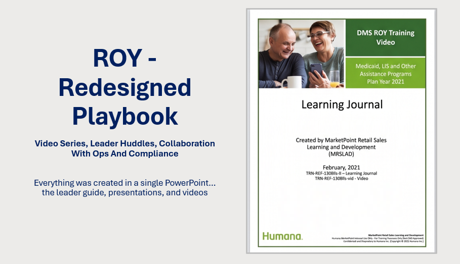

Recognition
ROY - Video series, leader huddles, collaboration with Ops and Compliance
Ingrid redesigned the ROY Playbook and process to provide a better agent experience by dividing the content into individual modules and adding leader-led virtual huddles to reinforce learning. The project resulted in six self-paced modules supported by short videos and a presentation guide for review exercises.
She also worked closely with DMS and Sales Integrity, bringing strong collaboration, leadership, and attention to detail to a successful deliverable. Ingrid was instrumental in a TTT series that trained ASU facilitators on video-based learning and feedback practices.